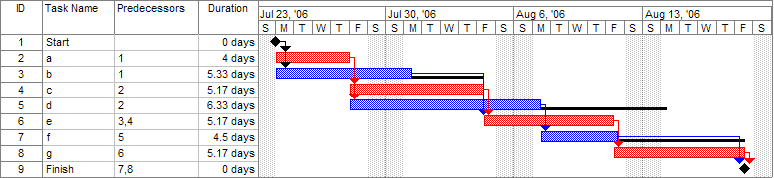
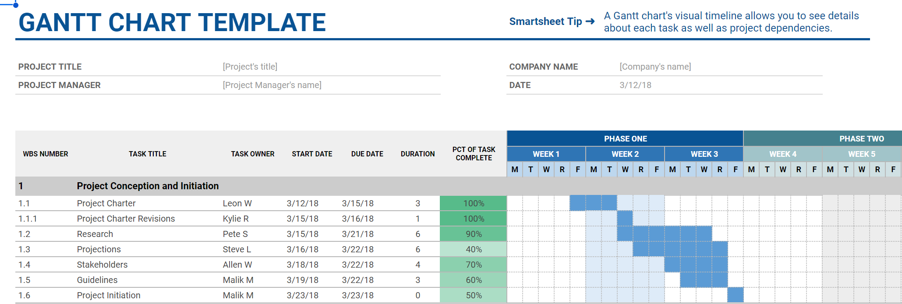

<style>
  figcaption {
    font-size: small;
    padding-top: 8px;
  }
</style>
<aside aria-labelledby="h-abstract">
  <h2 id="h-abstract">Abstract</h2>
  <p>
    In the field of Project Management there are different chart types used to
    analyze a project, such as timelines, PERT charts, and Gantt charts. This
    article provides a solid mathematical basis for describing such charts and
    then uses that to categorize the most common types of charts based on their
    mathematical properties.
  </p>
</aside>

<section>
  <h2>Background</h2>
  <p>
    There are many types of charts used for project planning, and the names for
    them are used inconsistently. For example, Fig 1 is an example Gantt chart
    produced by Microsoft Project.
  </p>
  <figure>
    
    <figcaption>
      <strong>Figure 1.</strong>
      A Gantt chart created using Microsoft Project. The critical path is in
      red, the slack is the black lines connected to non-critical activities.
      <a
        href="https://en.wikipedia.org/wiki/User:Dbsheajr"
        class="extiw"
        title="en:User:Dbsheajr"
        >Dbsheajr</a
      >
      at the
      <a href="https://en.wikipedia.org/wiki/" class="extiw" title="w:"
        >English-language Wikipedia</a
      >,
      <a
        href="http://creativecommons.org/licenses/by-sa/3.0/"
        title="Creative
    Commons Attribution-Share Alike 3.0"
        >CC BY-SA 3.0</a
      >,
      <a href="https://commons.wikimedia.org/w/index.php?curid=77392062"
        >Link</a
      >
    </figcaption>
  </figure>

  <p>
    Other charts Gantt charts lack dependencies between the tasks being tracked,
    like in the spreadsheet based chart in Fig. 2.
  </p>

  <figure>
    
    <figcaption>
      <strong>Figure 2.</strong>
      The <q>Basic Gantt Chart Template</q> in Google Sheets as provided by
      SmartSheet.
      <a
        href="https://docs.google.com/spreadsheets/d/1jERZMnzW27ZbzLQGzNdIKl0E8QOumXOPeb0CgQ_Y4GE/edit?usp=sharing"
        >Link</a
      >
    </figcaption>
  </figure>
</section>

<section>
  <h2>Defining Characteristics</h2>
  <section>
    <h3>Timelines</h3>
  </section>
  <section>
    <h3>Gantt Charts</h3>
  </section>
  <section>
    <h3>PERT Charts</h3>
    <p>We know these are directed acyclic graphs.</p>
  </section>
  <section>
    <h3>Critical Path Method</h3>
  </section>
</section>

<section>
  <h2>Basic Graph Theory</h2>
  <section>
    <h3>Graphs</h3>
    <dl>
      <dd>$$ G=(V,E) $$</dd>
    </dl>
  </section>
  <section>
    <h3>Weighted Graphs</h3>
  </section>
  <section>
    <h3>Directed-Acyclic Graphs</h3>
  </section>
  <section>
    <h3>Graph Algorithms</h3>
  </section>
</section>

<section>
  <h2>Chart</h2>
  <section>
    <h3>Definitions</h3>
  </section>
  <section>
    <h3>Categorization</h3>
    <p>
      Show how the definition covers all the examples given in Defining
      Characteristics, and the mathematical differences between the categories.
    </p>
  </section>
  <section>
    <h3>Algorithms</h3>
  </section>
</section>
